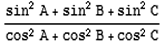
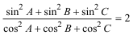
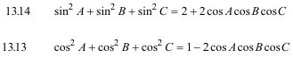
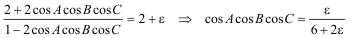
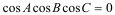
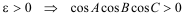
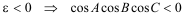

De investigación. Propuesto por Juan Bosco Romero Márquezprofesor colaborador de la Universidad de Valladolid Problema 329 Demostrar que un triángulo cuyos ángulos B y C satisfacen la igualdad
 Es rectángulo. [Ampliación del proponente: ver qué tipo de triángulo es si se tienen las posibles desigualdades] IMO Shortlist 1967. Poland. 5 http://www.mathlinks.ro/Forum/resources.php?c=1&cid=17&year=1967&sid=183024c22942408a0b5a9f0b3955605d Solución de José María Pedret, Ingeniero Naval. Esplugues de Llobregat (Barcelona). (5 de julio de 2006) |
|
SOLUCIÓN |
|
Si tomamos la igualdad del enunciado
 en TRAJAN LALESCO (La géométrie du triangle. Vuibert. 1952. Paris) obtenemos del capítulo 13
 y si sustituimos el 2 del enunciado por 2+ε
 Si ε=0

Uno de los cosenos se anula. .El triángulo es rectángulo Si ε>0

Todos los cosenos son positivos y por tanto todos los ángulos son agudos. El triángulo es acutángulo. Si ε<0

Uno de los cosenos es negativo y por tanto todos uno de los ángulos es obtuso. El triángulo es obtusángulo. |